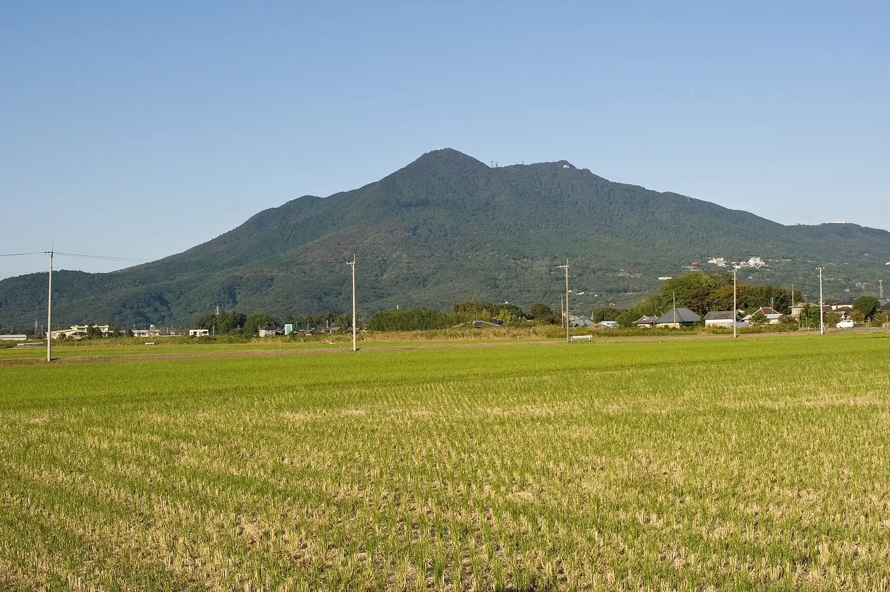

01Tsukuba
Mt. Tsukuba and a hot spring
An 877-meter mountain with two peaks and a view over the Kanto plain on a clear day.
- Hike up, or ride the cable car or ropeway
- Tsukubasan Shrine on the way
- Finish with a soak at Tsukuba no Yu